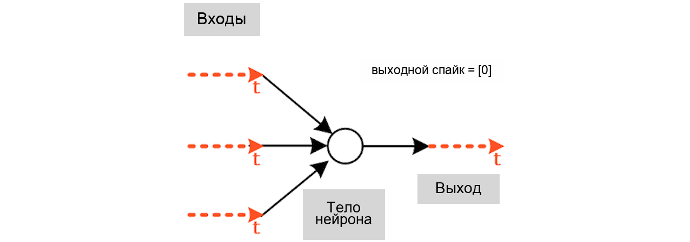

Русский перевод. Неофициальный перевод актуальной документации snnTorch latest (0.9.4). Оригинал: https://snntorch.readthedocs.io/en/latest/. Документация распространяется по лицензии CC BY-SA 3.0.
Введение
Мозг — идеальное место для поиска вдохновения для разработки более эффективных нейронных сетей. Одно из главных отличий от современного глубокого обучения заключается в том, что мозг кодирует информацию с помощью спайков, а не непрерывных активаций. snnTorch — это пакет Python для выполнения градиентного обучения с использованием спайковых нейронных сетей. Он расширяет возможности PyTorch, используя его ускоренные вычисления тензоров на GPU и применяя их к сетям спайковых нейронов. Предварительно разработанные модели спайковых нейронов бесшовно интегрированы в фреймворк PyTorch и могут рассматриваться как рекуррентные активационные блоки.
{kind=link}

Если вам нравится этот проект, пожалуйста, поставьте звезду ⭐ этому репозиторию — это самый простой и лучший способ поддержать его.
Если у вас есть проблемы, комментарии или вы ищете советы по обучению спайковых нейронных сетей, вы можете открыть issue, обсуждение или пообщаться в нашем discord канале.
Структура snnTorch
snnTorch содержит следующие компоненты:
Компонент |
Описание |
|---|---|
библиотека спайковых нейронов, подобная torch.nn, глубоко интегрированная с autograd |
|
позволяет экспортировать в другие SNN библиотеки через NIR |
|
общие арифметические операции над спайками, например, loss, регуляризация и т.д. |
|
позволяет импортировать из других SNN библиотек через NIR |
|
библиотека для генерации спайков и преобразования данных |
|
инструменты визуализации для данных на основе спайков с использованием matplotlib и celluloid |
|
опциональные функции суррогатного градиента |
|
функции утилит для наборов данных |
snnTorch разработан для интуитивного использования с PyTorch, как если бы каждый спайковый нейрон был просто еще одной активацией в последовательности слоев. Поэтому он агностичен к полносвязным слоям, сверточным слоям, остаточным соединениям и т.д.
В настоящее время модели нейронов представлены рекурсивными функциями, что устраняет необходимость хранения следов мембранного потенциала для всех нейронов в системе для расчета градиента. Небольшие требования snnTorch позволяют успешно обучать как маленькие, так и большие сети на CPU, когда это необходимо. При условии загрузки моделей сети и тензоров на CUDA, snnTorch использует ускорение GPU так же, как PyTorch.
Цитирование
Если вы считаете snnTorch полезным в своей работе, пожалуйста, цитируйте следующий источник:
@article{eshraghian2021training,
title = {Training spiking neural networks using lessons from deep learning},
author = {Eshraghian, Jason K and Ward, Max and Neftci, Emre and Wang, Xinxin
and Lenz, Gregor and Dwivedi, Girish and Bennamoun, Mohammed and
Jeong, Doo Seok and Lu, Wei D},
journal = {Proceedings of the IEEE},
volume = {111},
number = {9},
pages = {1016--1054},
year = {2023}
}
Сообщите нам, если вы используете snnTorch в интересной работе, исследовании или блогах — мы будем рады узнать об этом больше! Свяжитесь по адресу snntorch@gmail.com.
Требования
Для использования snnTorch необходимо установить PyTorch. Убедитесь, что установлена правильная версия torch для вашей системы для обеспечения совместимости с CUDA.
Следующие пакеты устанавливаются автоматически при использовании команды pip:
numpy
pandas
Следующие пакеты необходимы для использования export_nir и import_nir:
nir>=1.0.6
nirtorch>=2.0.5
Следующие пакеты необходимы для использования spikeplot:
matplotlib
Установка
Выполните следующую команду для установки:
$ python
$ pip install snntorch
Чтобы установить snnTorch из исходного кода:
$ git clone https://github.com/jeshraghian/snnTorch
$ cd snntorch
$ python setup.py install
Чтобы установить snntorch с помощью conda:
$ conda install -c conda-forge snntorch
Для установки для сборки на основе Intelligent Processing Units (IPU) с использованием ускорителей Graphcore:
$ pip install snntorch-ipu
API и примеры
Полный API доступен здесь. Предоставлены примеры, учебные пособия и блокноты Colab.
Быстрый старт

Вот несколько способов начать работу с snnTorch:
Для быстрого примера запуска snnTorch посмотрите следующий фрагмент или протестируйте блокнот быстрого старта:
import torch, torch.nn as nn
import snntorch as snn
from snntorch import surrogate
from snntorch import utils
num_steps = 25 # number of time steps
batch_size = 1
beta = 0.5 # neuron decay rate
spike_grad = surrogate.fast_sigmoid() # surrogate gradient
net = nn.Sequential(
nn.Conv2d(1, 8, 5),
nn.MaxPool2d(2),
snn.Leaky(beta=beta, init_hidden=True, spike_grad=spike_grad),
nn.Conv2d(8, 16, 5),
nn.MaxPool2d(2),
snn.Leaky(beta=beta, init_hidden=True, spike_grad=spike_grad),
nn.Flatten(),
nn.Linear(16 * 4 * 4, 10),
snn.Leaky(beta=beta, init_hidden=True, spike_grad=spike_grad, output=True)
)
data_in = torch.rand(num_steps, batch_size, 1, 28, 28) # random input data
spike_recording = [] # record spikes over time
utils.reset(net) # reset/initialize hidden states for all neurons
for step in range(num_steps): # loop over time
spike, state = net(data_in[step]) # one time step of forward-pass
spike_recording.append(spike) # record spikes in list
Глубокое погружение в SNN
Если вы хотите изучить все основы обучения спайковых нейронных сетей, от моделей нейронов до нейронного кода и обратного распространения, серия учебных пособий snnTorch — отличное место для начала. Она состоит из интерактивных блокнотов с полными пояснениями, которые помогут вам быстро освоиться.
Учебное пособие |
Название |
Ссылка на Colab |
|---|---|---|
Кодирование спайков с помощью snnTorch |
|
|
Нейрон с утечкой интеграции и срабатыванием |
|
|
Прямая спайковая нейронная сеть |
|
|
Модели спайковых нейронов второго порядка (опционально) |
|
|
Обучение спайковых нейронных сетей с помощью snnTorch |
|
|
Суррогатный градиентный спуск в сверточной SNN |
|
|
Нейроморфные наборы данных с Tonic + snnTorch |
|
Продвинутые учебные пособия |
Ссылка на Colab |
|---|---|
|
|
|
Регрессия: Часть I - Обучение мембранного потенциала с помощью LIF-нейронов |
|
Регрессия: Часть II - Классификация на основе регрессии с рекуррентными LIF-нейронами |
|
— |
Вклад
Если вы готовы внести вклад в snnTorch, инструкции можно найти здесь.
Благодарности
snnTorch в настоящее время поддерживается Группой нейроморфных вычислений UCSC. Первоначально он был разработан Jason K. Eshraghian в Lu Group (Мичиганский университет).
Дополнительный вклад внесли Vincent Sun, Peng Zhou, Ridger Zhu, Alexander Henkes, Steven Abreu, Xinxin Wang, Sreyes Venkatesh, gekkom, и Emre Neftci.
Лицензия и авторские права
Исходный код snnTorch опубликован на условиях лицензии MIT. Документация snnTorch лицензирована в соответствии с лицензией Creative Commons «Attribution-Share Alike» 3.0 Unported (CC BY-SA 3.0).